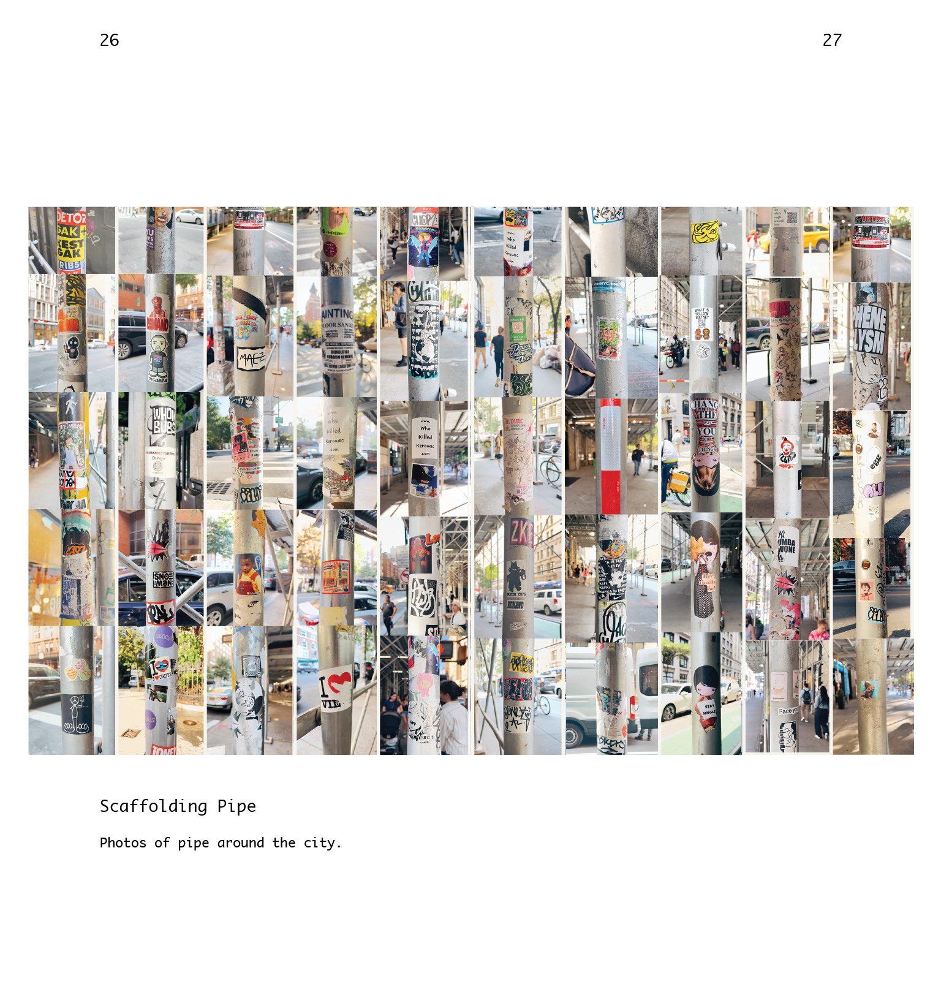
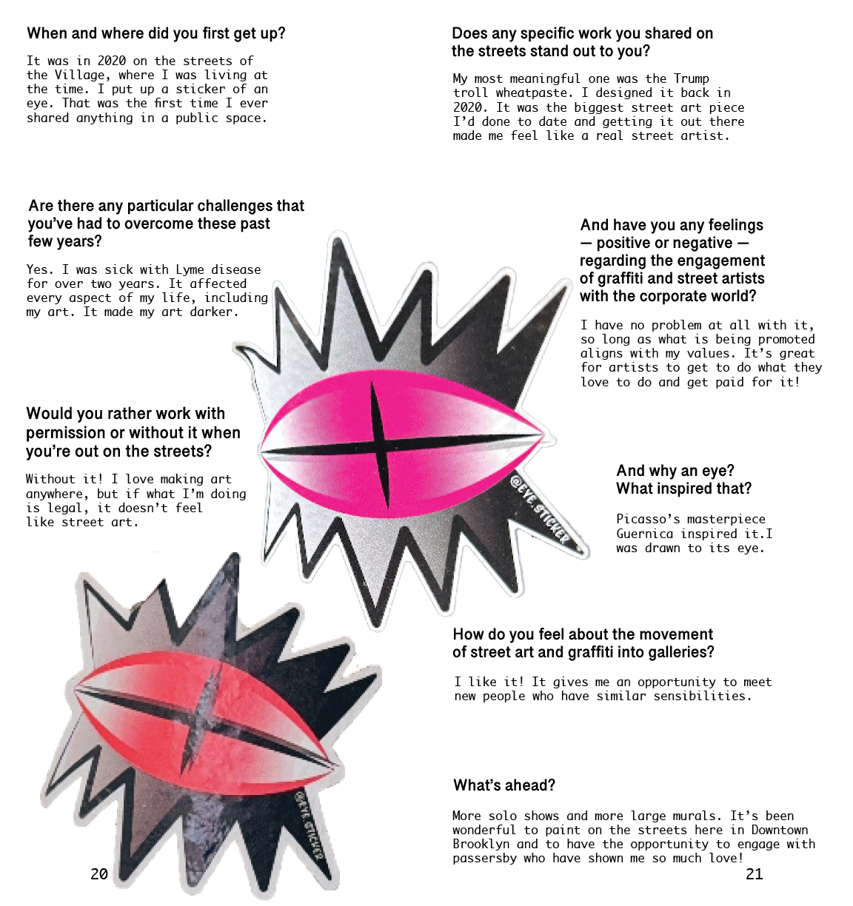
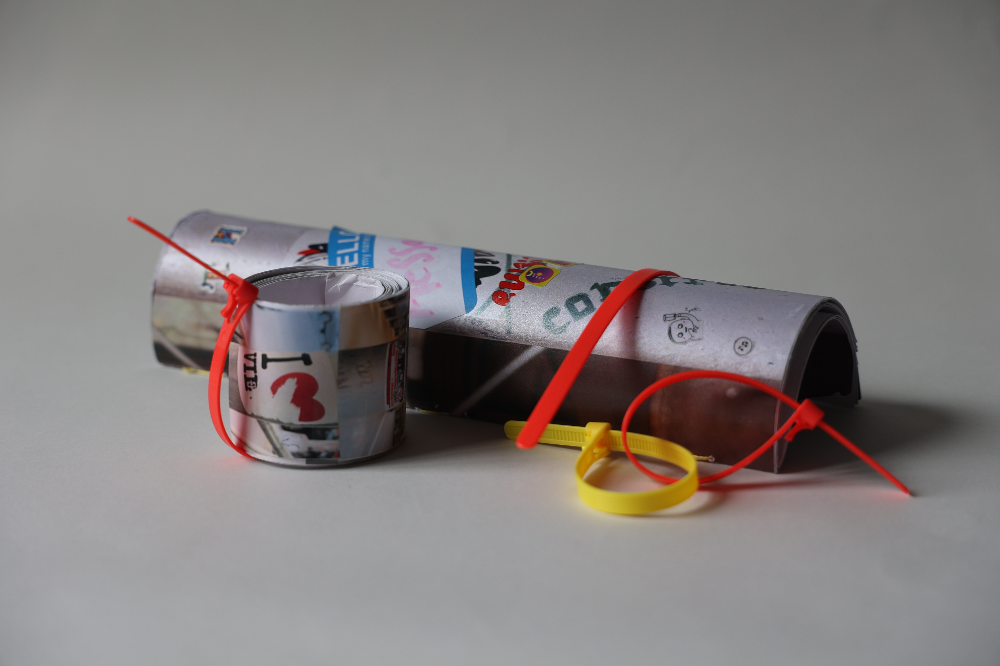
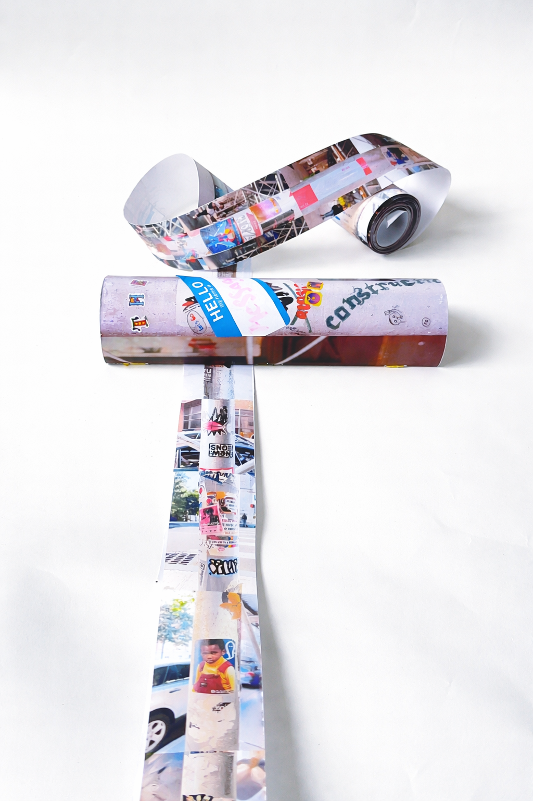
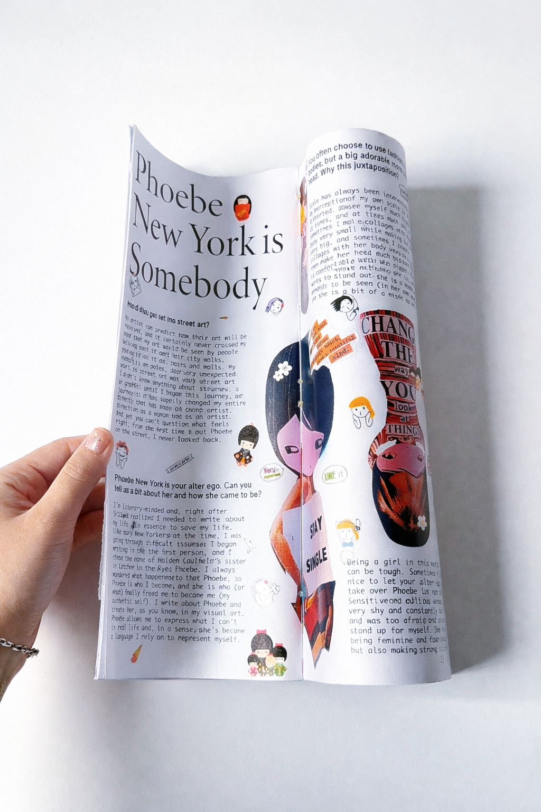
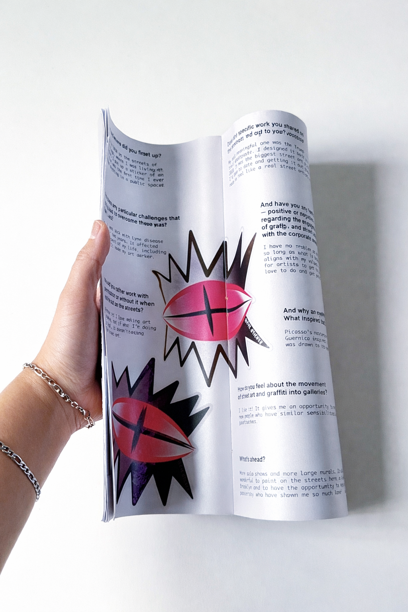
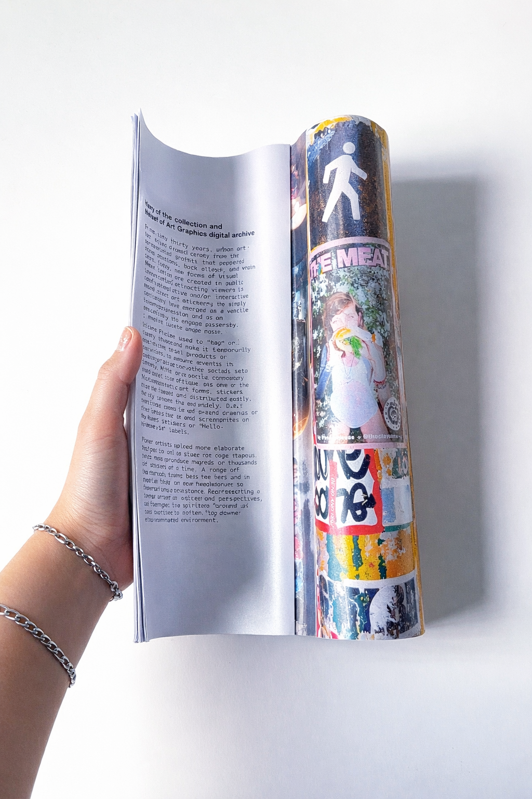
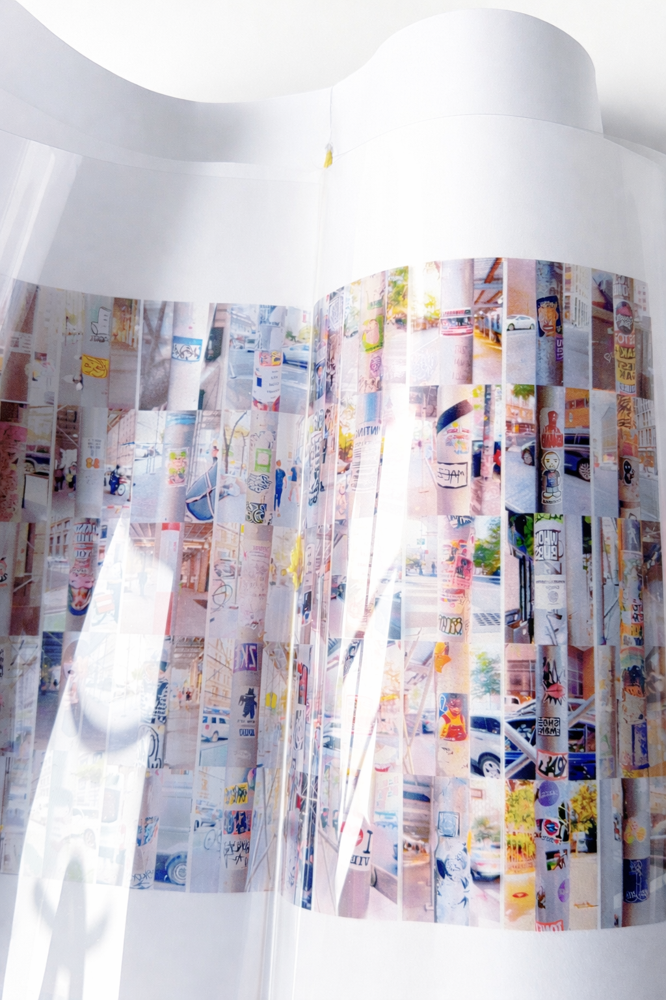
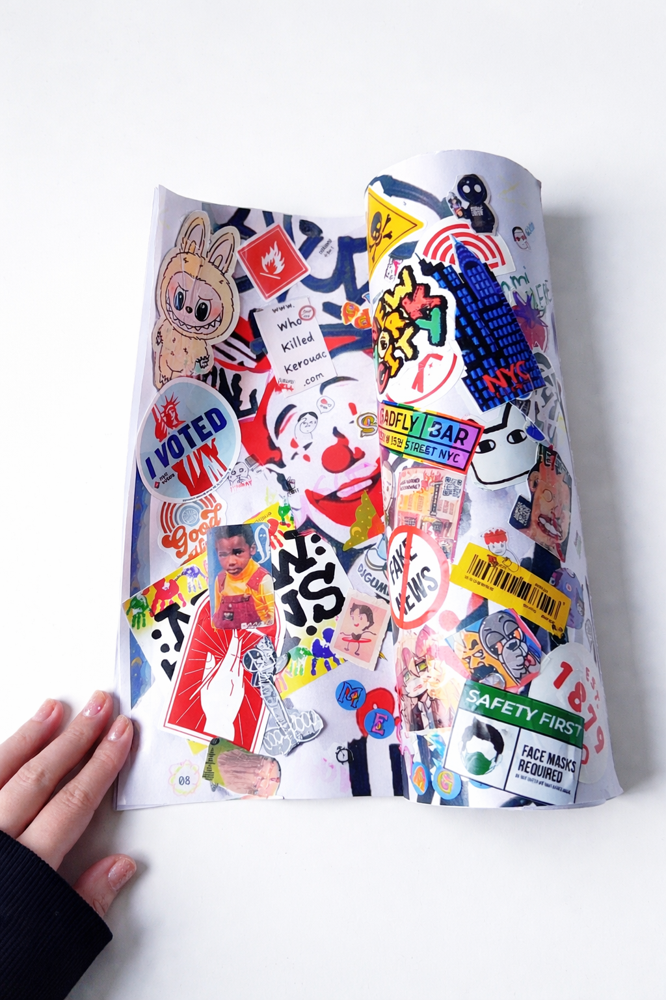
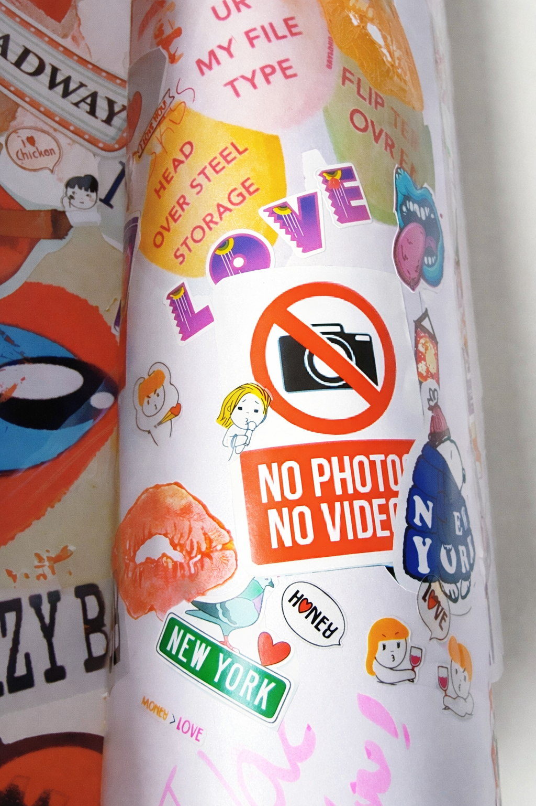

{kind=link}
The Message on Construction
While walking around New York City, I began noticing that there was alot of stickers placed on pipe scaffolding throughout the streets. These stickers advertise events, promote artists, share messages, or simply leave a mark in public space. What first seemed random began to feel like a visual layer of the city.
I started collecting and documenting these stickers to explore how people use public space to communicate. Many of them are temporary and easy to miss, but together they create a kind of street history. Some are handmade, some are printed, and others are faded or partially torn, showing how time and weather affect them.
I wanted this project to feel real and textured, almost like a short documentary or journal. The design stays simple so the focus remains on the content and the visual stories these stickers carry. This project is for people who are curious about the city and notice the small details others often overlook.
Typography
The typography helps separate documentation, headlines, and supporting details while keeping the overall system simple and easy to follow.
Primary Display
Telugu Sangam MN
- Regular · 24 pt
- Regular · 22 pt
Editorial / Print
Minion Pro
- Regular · 9 pt
- Regular · 64 pt
- Regular · 96 pt
- Regular · 150 pt
Supporting Text
Monaco
- Regular · 22 pt
Digital






Final Product Photography



Final Book Photograph






